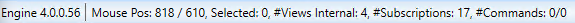

Status Bar
The status bar, when it is enabled from the View tab, displays current information about the version of the Graphics Editor, the position of the mouse, and the name of the object on the graphic canvas that is active and has the focus. Depending on the selection, additional information is displayed, such as the number of data points subscribed to, the number of commands, and internal views, etc.
